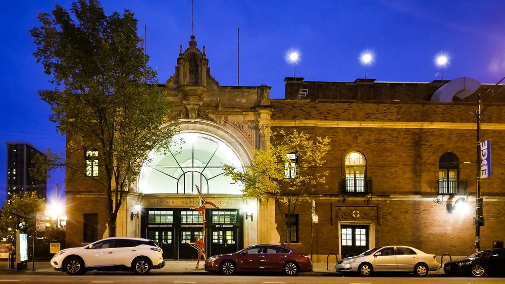
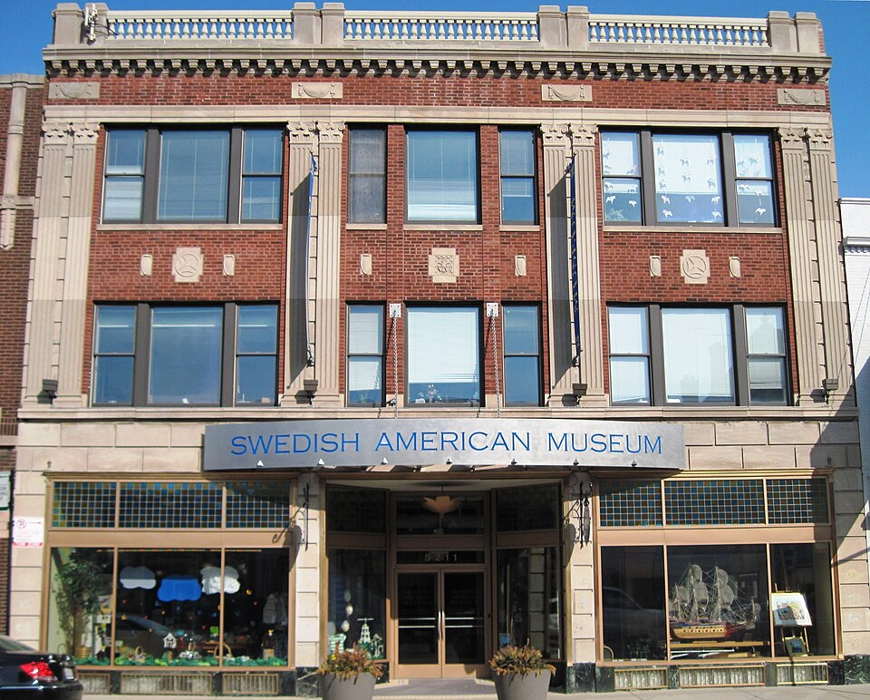

Registration opens
Singing begins
Morning session
Dinner on the grounds
Afternoon session
Singing concludes
The Illinois Sacred Harp Singers warmly invite you to the 41st annual Midwest Convention.
Please join us May 30th and 31st, 2026, at the Broadway Armory in Chicago. We’ll have two days full of singing from The Sacred Harp 2025 revision. Loaner books are available, no experience is required, and you can come and go for any part of either day.
Admission is free and open to all, regardless of musical knowledge or ability! We really would love to have you. We’re still ironing out all the details, but will keep this page updated as we go.
Tom George of Georgia offers a singing school from The Sacred Harp. Afterwards, we will sing from The Shenandoah Harmony. Loaners provided.
May 29, 6–9pm.
At the Swedish American Museum, 5211 N. Clark St.
A casual event in the evening following Saturday’s singing.
May 30, 6–9pm.
At the Swedish American Museum, 5211 N. Clark St.

Located in the north side neighborhood of Edgewater, the Broadway Armory is the Chicago Park District’s largest indoor facility. It was built in 1916 as an ice skating rink and has been a public recreation site since 1979.
The 41st Midwest Convention will take place in the second floor Ballroom, which is ADA-accessible and reachable by elevator.
“Dinner on the grounds” is the potluck lunch that sustains us in body and spirit for a full day of singing. Local singers, please bring a dish to share if you are able! There is a small kitchen in the Armory for heating dishes, but refrigeration may be limited.
We will have throat-soothing tea and energizing coffee on hand during our singing sessions as well.
If public transit and taxi/ride share is not option, there are parking options available:

Our Friday singing school and Saturday social will be generously hosted by the Swedish American Museum. Founded in 1976, the museum focuses on Swedish culture and immigration. And it is surrounded by a range of restaurants and shops in the historically Swedish neighborhood of Andersonville.
If public transit and taxi/ride share is not option, there are parking options available:
We would love to connect with you on our Facebook event and email list for real-time updates.
Coming in from out of town? Email Rochelle to be connected with local singers who can host you.
For other questions, you can reach us through the form below.
Eager for shape notes in Chicago the rest of the year? We sing most weeks every month!